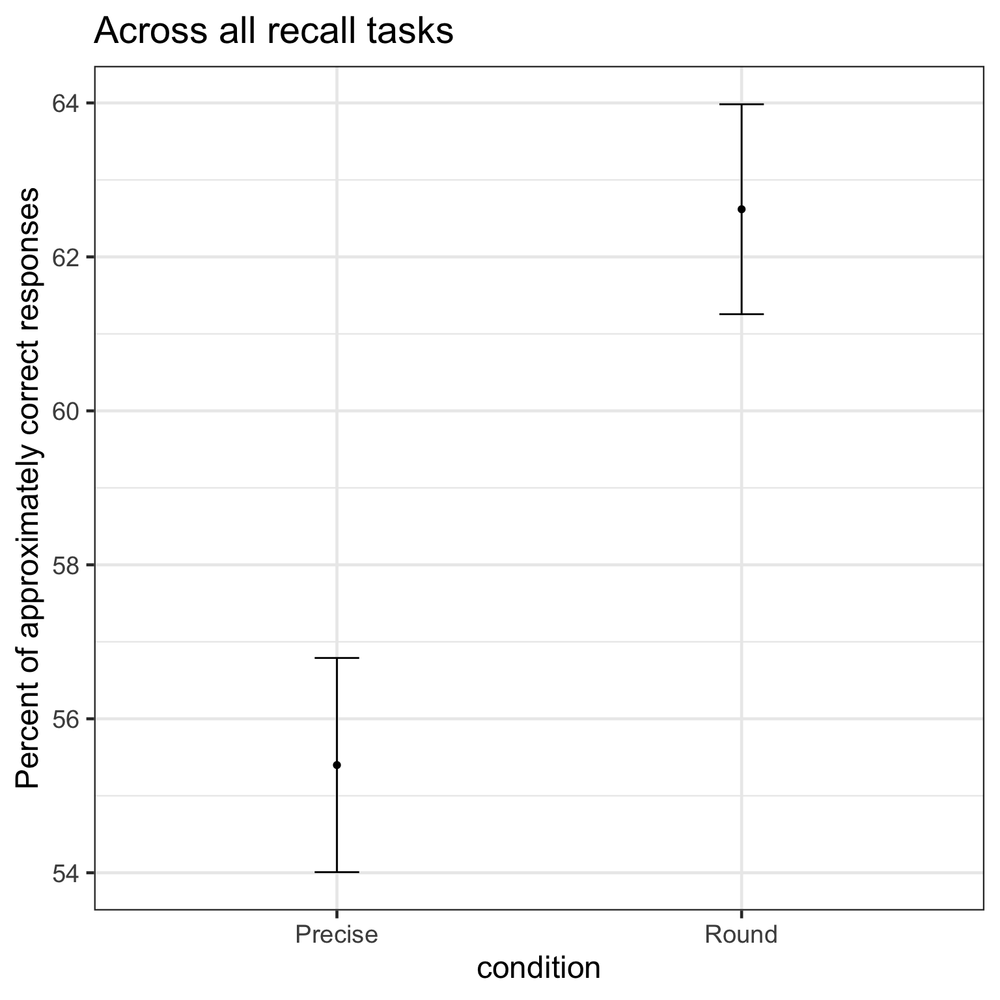
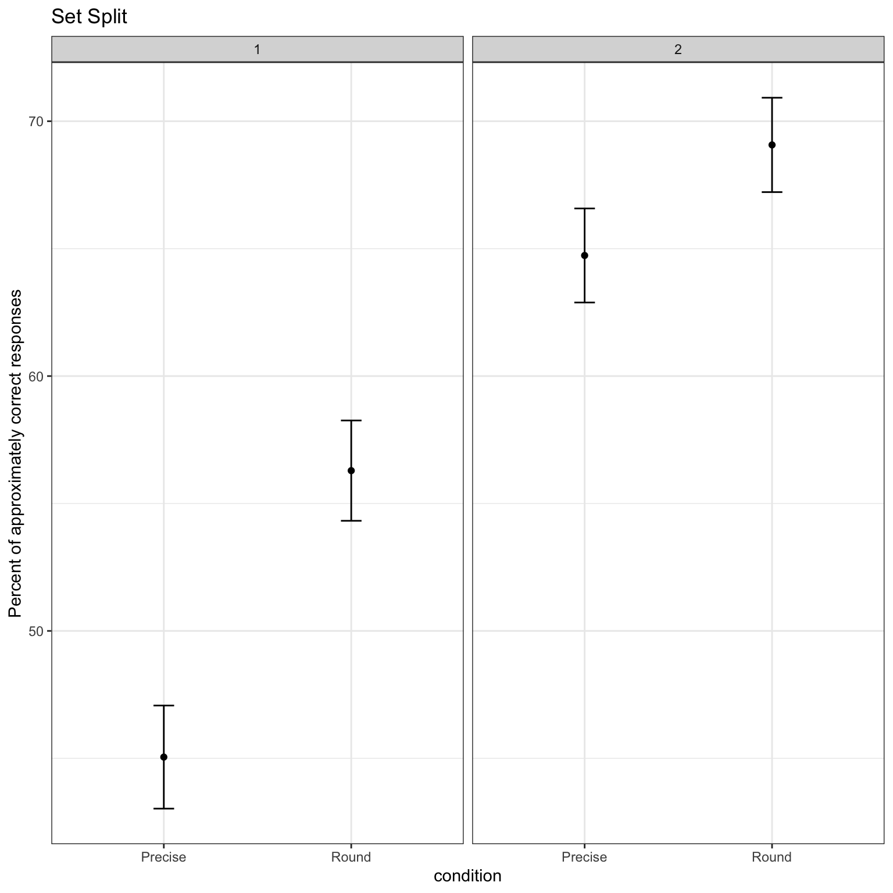
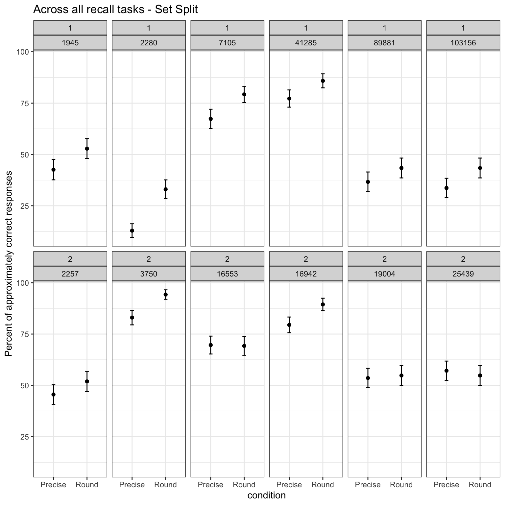

| set | condition | number_id | m_target | sd_target |
|---|---|---|---|---|
| 1 | Precise | 1 | 39057 | 47479 |
| 1 | Precise | 2 | 3777 | 2887 |
| 1 | Round | 1 | 38337 | 46651 |
| 1 | Round | 2 | 3833 | 2754 |
| 2 | Precise | 1 | 9841 | 11199 |
| 2 | Precise | 2 | 8337 | 9268 |
| 2 | Round | 1 | 9852 | 11141 |
| 2 | Round | 2 | 8433 | 9190 |
Original work
Nguyen, H. A., Hofman, J. M., & Goldstein, D. G. (2022). Round numbers can sharpen cognition. In Proceedings of the 2022 CHI Conference on Human Factors in Computing Systems (pp. 1-15).
Team BA autumn 2023
- Loris Adam
- Mika Berthel
- Joël Kämpf
- Joël Schrepfer
- Laura Staudenmann
- Cedric Thommen
- Sara von Allmen
Abstract
Scientists and journalists strive to report numbers with high precision to keep readers well-informed. Our work investigates whether this practice can backfre due to the cognitive costs of processing multi-digit precise numbers. In a pre-registered randomized experiment, we presented readers with several news stories containing numbers in either precise or round versions. We then measured their ability to approximately recall these numbers and make estimates based on what they read. Our results revealed a counterintuitive efect where reading round numbers helped people better approximate the precise values, while seeing precise numbers made them worse. We also conducted two surveys to elicit individual preferences for the ideal degree of rounding for numbers spanning seven orders of magnitude in various contexts. From the surveys, we found that people tended to prefer more precision when the rounding options contained only digits (e.g., “2,500,000”) than when they contained modifer terms (e.g., “2.5 million”). We conclude with a discussion of how these fndings can be
Replication
We ran a direct replication of experiment 1 of Nguyen et al. (2022). We developed a set of six new tasks (see Appendix) that structurally followed the original: two numbers (either round orprecise) and two additional numbers that were not relevant for the task.
So, clearly we produced two, quite different sets of stimuli. Set 1 had a average of 20008.8 for the first number and 2390, whereas set 2 had 8314.5 for the first and 3875 for the second number.
Demographics
The original paper had 1300 participants recruited on Amazon’s Mechanical Turk. We recruited through word of mouth among friends and family of the student group running this study.
Overall we collected data from 423 participants. Female participants (n = 238) were M = 26.5, SD = 11.6 years; Male participants (n = 171) were M = 33.5, SD = 17 years; non-binary participants (7) were M = 26.3, SD = 13.6 years old.
Experiment - Round versus precise
Let’s first look at the overall effect of the manipulation (see Figure Figure 1). Applying the same rule as Nguyen et al. (2022) we code all responses that fall within a 10% of the precise number as a correct response. Looking at the percentage of correct responses between the precise (0.6) and round (0.6) condition we see that the round condition has a ~-54.8% higher percentage of correct responses than precise.

2-sample test for equality of proportions with continuity correction
data: c(prop_table$n[2], prop_table$n[4]) out of c(prop_table$n[1] + prop_table$n[2], prop_table$n[3] + prop_table$n[4])
X-squared = 13, df = 1, p-value = 0.0003
alternative hypothesis: two.sided
95 percent confidence interval:
-0.11 -0.03
sample estimates:
prop 1 prop 2
0.6 0.6
Welch Two Sample t-test
data: check_within_range by condition
t = -4, df = 2536, p-value = 0.0002
alternative hypothesis: true difference in means between group Precise and group Round is not equal to 0
95 percent confidence interval:
-0.11 -0.03
sample estimates:
mean in group Precise mean in group Round
0.6 0.6


Appendix
Overview Task values
| Id | Set | Task | No 1 precise | No 1 rounded | No 2 precise | No 2 rounded | Target Percent precise | Percent rounded |
|---|---|---|---|---|---|---|---|---|
| 1 | 2 | Arztpraxen | 25’439 | 25’000 | 19’004 | 19’000 | 74.7 % | 76 % |
| 2 | 2 | Gotthardtunnel | 16’942 | 17’000 | 2’257 | 2’300 | 13.3 % | 13.5 % |
| 3 | 1 | Arbeitslosigkeit | 89’881 | 90’000 | 2’280 | 2’500 | 2.5 % | 2.8 % |
| 4 | 1 | Urteile | 103’156 | 100’000 | 1’945 | 2’000 | 1.9 % | 2.0% |
| 5 | 1 | Geographie | 41’285 | 40’000 | 7’105 | 7’000 | 17.2 % | 17.5 % |
| 6 | 2 | Umsatzlöhne | 16’553 | 17’000 | 3’750 | 4’000 | 22.7 % | 23.5 % |
Tasks in German
1. Arztpraxen
Jede vierte Ärztin bzw. Jeder vierte Arzt war Ende 2021 mindestens 60 Jahre alt. Ende 2021 waren in den Arztpraxen und ambulanten Zentren in der Schweiz 25’439 [25’000] Ärztinnen und Ärzte tätig, was 19’004 [19’000] Vollzeitäquivalenten entspricht. Gut 25% der Ärztinnen und Ärzte war mindestens 60 Jahre alt. Dies zeigen die jüngsten Ergebnisse des Bundesamtes für Statistik (BFS).
2. Gotthardtunnel
Der Gotthard-Strassentunnel ist mit 16’942 [17’000] Metern Länge der viertlängste Strassentunnel der Welt und der längste Strassentunnel in den Alpen. Die Autostrasse verbindet Göschenen im Kanton Uri mit Airolo im Kanton Tessin. Im Jahr 2012 wurde er durchschnittlich von 17’061 Fahrzeugen pro Tag befahren, wovon 2’257 [2’300] schwere Lkw waren.
3. Umsatzlöhne
Der Zürcher Gastronom Michel Péclard sorgte diesen Sommer mit einem neuen Lohnmodell für Aufsehen. Einem seiner Kellner bezahlte er 16’553 [17’000] Franken in einem Monat. Péclard setzt beim Servicepersonal seiner Restaurants auf Umsatzbeteiligung. Der Toplohn sei zwar eine Ausnahme gewesen. Doch seine Angestellten hätten im Sommer monatlich zwischen 8’000 und 12’000 Franken verdient – weit über dem garantierten Mindestlohn von 3’750 [4’000] Franken für Ungelernte.
4. Arbeitslosigkeit
Gemäss den Erhebungen des Staatssekretariats für Wirtschaft (SECO) waren Ende August diesen Jahres 89’881 [90’000] Arbeitslose bei den Regionalen Arbeitsvermittlungszentren (RAV) eingeschrieben, 2’280 [2’500] mehr als im Vormonat. Die Arbeitslosenquote stieg von 1,9 % im Juli auf 2,0 % im Berichtsmonat.
5. Erwachsenenstrafurteile
Im letzten Jahr ist die Zahl der Strafregistereinträge gegenüber dem Vorjahr um 3% auf 103’156 [103’000] Verurteilungen gestiegen. Die Verstösse aufgrund des Strassenverkehrsgesetzes erhöhten sich leicht, jene aufgrund des Betäubungsmittelgesetzes gingen um 13% zurück. Insgesamt wurden 1’945 [2’000] Landesverweisungen ausgesprochen.
6. Geographie
Mit einer Fläche von 41’285 [40’000] Quadratkilometern ist die Schweiz von allen Ländern Europas eines der flächenmäßig kleineren. Der Binnenstaat in Mitteleuropa grenzt an Deutschland, Österreich, Liechtenstein, Frankreich und Italien und hat Anteil an drei großen europäischen Sprachräumen (Deutsch, Italienisch, Französisch). Das Land ist aufgeteilt in 26 teilsouveräne Kantone. Graubünden ist mit einer Fläche von 7’105 [7’000] Quadratkilometern der größte, der Kanton Basel-Stadt mit rund 37 Quadratkilometern der kleinste.